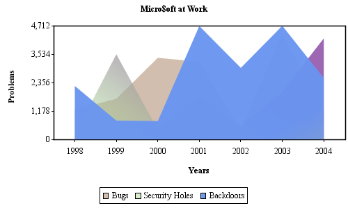
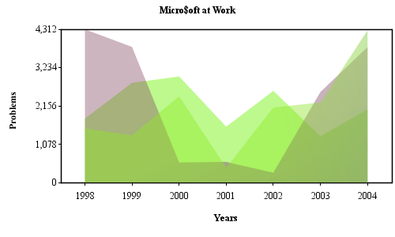
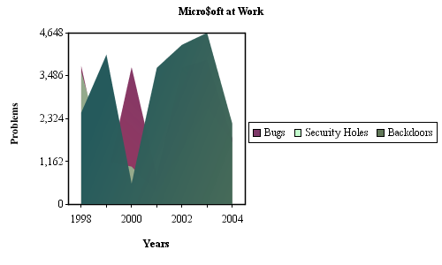
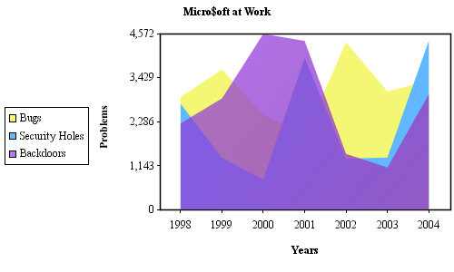
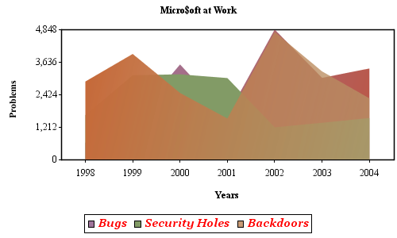
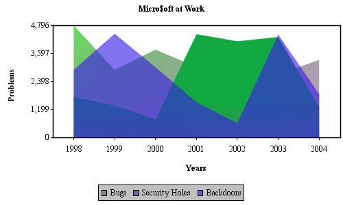
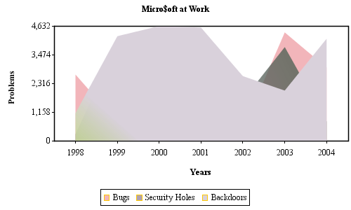
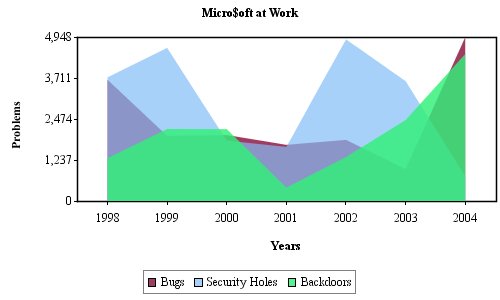
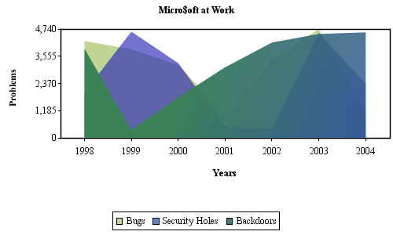

|
Legends can be used by all types of charts.
|
| Default Behavior |
| By default, the Legend is placed underneath the plot area, all labels are on a single row, even if that means the legend extends off the edge of the image, black font, black border, black icon borders, and a transparent background. |
|
DataSeries dataSeries = new DataSeries( ... ); dataSeries.addIAxisChartDataSet( new AxisChartDataSet( ... ) ); ChartProperties chartProperties= new ChartProperties(); AxisProperties axisProperties= new AxisProperties(); LegendProperties legendProperties= new LegendProperties(); AxisChart axisChart= new AxisChart( dataSeries, chartProperties, axisProperties, legendProperties, 500, 360 ); |
|  |
| Visibility |
| If you would like no Legend to be visible, pass null for the LegendProperties Object parameter to the Chart. |
| AxisChart axisChart= new AxisChart( dataSeries, chartProperties, axisProperties, null, 500, 360 ); |
|  |
| Placement |
|
The legend can be drawn on all sides of the chart plot. This is specified via constants defined in the
LegendAreaProperties Class.
If you would like the Legend to be to the right of the plot area rather than the default position underneath the plot area, do the following: |
|
legendProperties.setPlacement( LegendAreaProperties.RIGHT ); |
|  |
| Note, the chart plot area shrunk to allow for the Legend to 'fit' on the image. |
| Layout |
| You can control the number of columns in the chart by doing the following: |
|
legendProperties.setPlacement( LegendAreaProperties.LEFT ); legendProperties.setNumColumns( 1 ); |
|  |
| I left the placement of the Legend to the right of the plot area to show how the plot area resized to fill the image size. The previous example had a tiny chart, now we increased that by forcing the Legend to use multiple columns. |
| Fonts |
| You can control the font used in the Legend by doing the following: |
|
legendProperties.setFont( new Font( "Georgia Negreta cursiva", Font.PLAIN, 13 ) ); legendProperties.setFontPaint( Color.red ); |
|  |
| Background Paint |
|
The background of the Legend uses the java.awt.Paint Interface to
control its appearance. There are several implementations of the java.awt.Paint Interface
in the java.awt Package to choose from. A value of null will make the Legend transparent. |
|
legendProperties.setBackgroundPaint( Color.lightGray ); |
|  |
| Icon Border Paint |
| The border of the icons used in the Legend use the java.awt.Paint Interface to control their appearance. A value of null will draw the icons with no borders. There are several implementations of the java.awt.Paint Interface in the java.awt Package to choose from. |
|
legendProperties.setIconBorderPaint( Color.orange ); |
|  |
| Border Paint |
| The border of the Legend uses the java.awt.Paint Interface to control its appearance. A value of null will draw the Legend with no borders. There are several implementations of the java.awt.Paint Interface in the java.awt Package to choose from. |
|
ChartStroke borderStroke= new ChartStroke( new BasicStroke( 1.0f ), Color.gray ); legendProperties.setBorderStroke( borderStroke ); |
|  |
| Chart Padding |
| You can change the distance the Legend lies from the chart plot area by using the following method: |
|
legendProperties.setChartPadding( 30 ); |
|  |